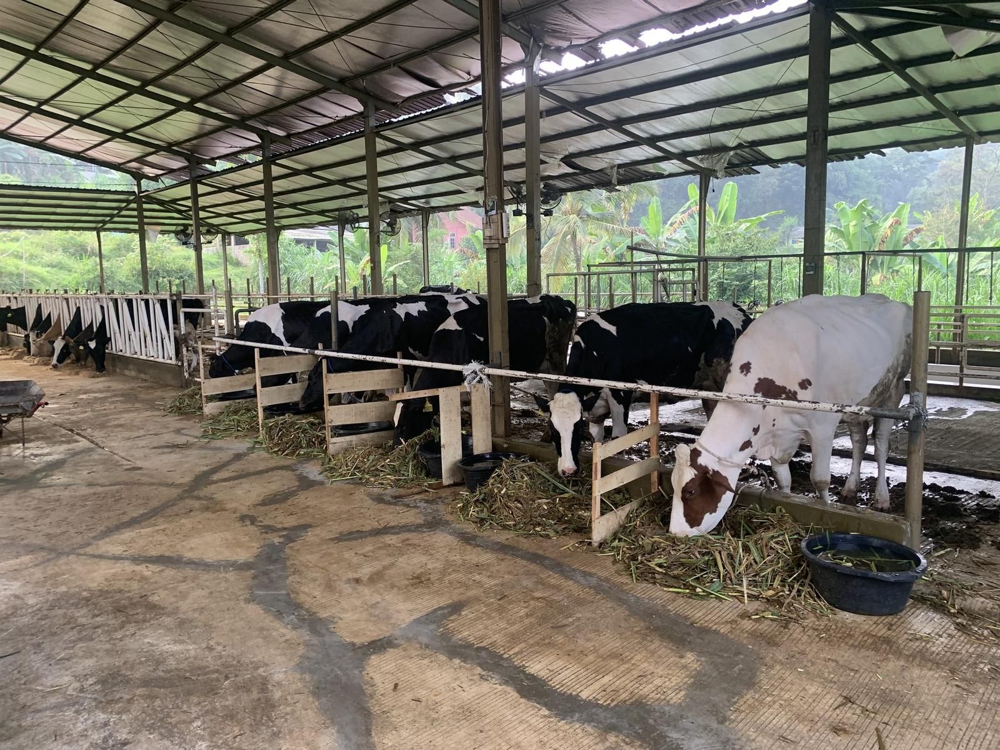
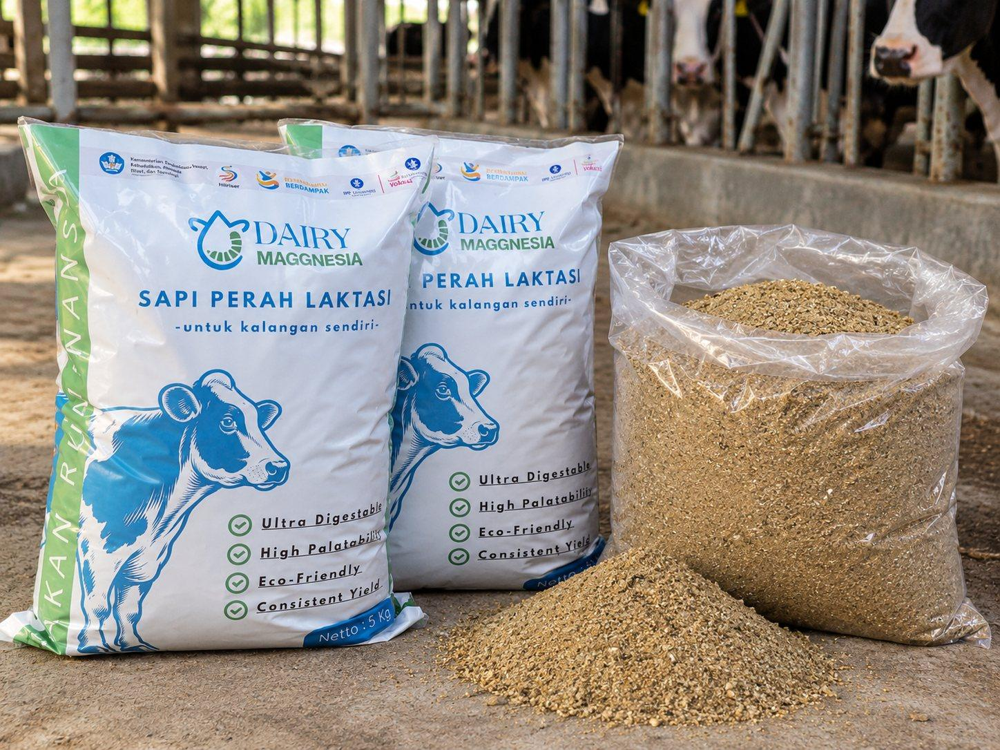

Mudah Dicerna
Ultra Digestible
Dikembangkan untuk mendukung proses pencernaan dan pemanfaatan nutrisi dalam ransum oleh sapi perah.
Produk
Pakan Konsentrat Sapi Perah dengan Pemanfaatan Minyak Maggot BSF
Dairy Maggnesia merupakan pakan konsentrat sapi perah yang dikembangkan melalui riset pemanfaatan minyak larva Black Soldier Fly (BSF) sebagai salah satu bahan alternatif dalam formulasi pakan.
Konsentrat ini digunakan bersama hijauan sebagai bagian dari ransum harian sapi perah.


Ultra Digestible
Dikembangkan untuk mendukung proses pencernaan dan pemanfaatan nutrisi dalam ransum oleh sapi perah.
High Palatability
Formulasi dikembangkan dengan mempertimbangkan tingkat penerimaan dan kesukaan ternak terhadap pakan.
Eco-Friendly
Memanfaatkan maggot BSF sebagai salah satu bahan pakan alternatif, sekaligus mendukung pemanfaatan kembali bahan organik menjadi sumber daya yang lebih bernilai.
Consistent Yield
Dikembangkan untuk mendukung performa sapi perah agar lebih stabil melalui formulasi ransum yang sesuai dengan kebutuhan ternak.
Komposisi Nutrisi
Panduan
Dairy Maggnesia dicampurkan dengan hijauan secara merata menggunakan metode Total Mixed Ration (TMR).
Perbandingan hijauan (rumput odot) dan konsentrat sekitar 5 : 1, dengan komposisi 16,2 kg rumput odot dan 3,4 kg Dairy Maggnesia.
Campuran TMR diberikan dua kali, yaitu pagi dan siang hari. Pada sore hari, ternak diberikan hijauan saja.
FAQ
Dairy Maggnesia adalah pakan konsentrat sapi perah berbasis riset yang dikembangkan melalui kolaborasi Sekolah Vokasi IPB University dan mitra industri, dengan memanfaatkan minyak larva BSF sebagai salah satu bahan alternatif dalam formulasi pakan.
Konsentrat merupakan pakan yang digunakan untuk melengkapi nutrisi dari hijauan. Sementara itu, TMR adalah metode pemberian pakan dengan mencampurkan konsentrat, hijauan, dan bahan lainnya menjadi satu ransum.
Tidak. Dalam formulasi Dairy Maggnesia, minyak larva BSF digunakan sebagai salah satu bahan dalam pakan konsentrat.
Pengembangan Dairy Maggnesia mencakup pengujian kualitas nutrisi, kecernaan, penerimaan pakan, serta evaluasi respons produksi dan kualitas susu. Hasil dan status masing-masing pengujian perlu dikonfirmasi kepada tim riset.
Informasi mengenai harga, ketersediaan, dan distribusi produk dapat ditanyakan melalui kontak resmi Dairy Maggnesia.